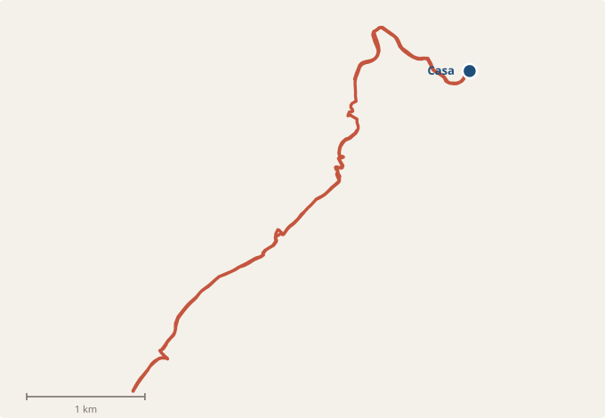
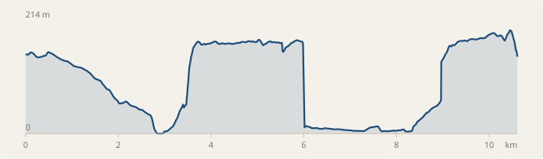

Todo lo que necesitas para tu estancia: cómo funciona la casa, dónde ir y cómo moverte.
Llegada
La casa está en Calle Italia, 36, en la parte baja de Altea Hills. La entrada es a partir de las 15:00.
En el control de acceso:
entra por el carril de NO REGISTRADOS, el de la izquierda, pegado a la caseta del guarda. El de la derecha es solo para residentes con matrícula dada de alta.
El control de acceso a Altea Hills. El carril de la izquierda, junto a la caseta, es el vuestro.
La casa tiene dos puertas. La de la calle da al jardín tras unas escaleras, y desde ahí se sube a la vivienda, que está en el nivel superior. A pie de calle tienes plaza privada para dos coches.
La casa
La casa desde la calle. La puerta de abajo es la del jardín; por las escaleras se sube al nivel de la piscina y a la vivienda.
WiFi
WifiCristina
Contraseña
Alteahome
La conexión es de fibra de 1000 Mb, así que puedes trabajar o ver series sin problema.
Electrodomésticos
Dos SmartTV LG, de 65 y 70 pulgadas, con Netflix, Prime Video, Disney+ y televisión en directo. Lavadora Samsung en la cocina. Nevera americana con dispensador de hielo y agua fría. Aire acondicionado Samsung en cada dormitorio y en el salón, que enfría y calienta, y ventiladores de techo.
En esa misma página tienes el cuadro eléctrico con fotos, por si alguna vez salta la luz.
El botón abre Google Maps con la ruta desde la casa y te dice el tiempo exacto según el tráfico.
Playas
Platja de l'Olla
La más cercana. De piedras, muy frecuentada por gente de aquí. Tiene chiringuitos y el hotel para tomar algo sin que salga caro para lo que es. Entre semana suele haber sitio para aparcar.Aparcamiento →
Platja del Mascarat · Campomanes
A un par de minutos en coche, junto al puerto deportivo.Ver en el mapa →
Playas de Altea
Buenas para pasar el día y quedarse luego a pasear por el paseo marítimo al atardecer. Aparcar cerca de la playa es complicado en temporada; este parking está algo más lejos pero siempre tiene sitio.Parking recomendado →
Platja del Racó de l'Albir
Merece al menos una visita. La playa de la esquina está muy bien y tiene bastante arena. Paseo con cafeterías y restaurantes.Ver en el mapa →
Dónde comer
Cerca de casa
Portosenso€€Al final del espigón del puerto, a un paso de casa. Muy bien para comer o tomar algo con la vista. Cierra los lunes.Ver en el mapa →
L'Olleta · Club del Mar€€€Junto a la playa de l'Olla, así que se puede juntar con un día de playa. Algo más caro, pero muy bueno. Cierra los lunes.Ver en el mapa →
Noa Lounge & Gourmet€€€En el puerto de Campomanes, a un par de minutos en coche. Carnes a la brasa y pescado, con terraza sobre el puerto.Ver en el mapa →
Casco antiguo
Los tres están a un paso unos de otros, subiendo hacia la iglesia. Merece la pena reservar en temporada.
Stromboli€€Pizzería y crepería en Carrer Major, con terraza en la azotea. Buena relación calidad-precio. Abre todos los días desde las 12:30.Ver en el mapa →
Oustau de Altea€€€Seguramente el mejor del casco antiguo. Cocina francesa, algo más caro que los otros dos. Justo enfrente del Stromboli. Solo cenas, desde las 18:30.Ver en el mapa →
Casa Vital€€En Carrer Salamanca, con terraza mirando al mar. Solo cenas; cierra domingos y lunes.Ver en el mapa →
Altea la Vella
A diez minutos subiendo, y los dos están casi puerta con puerta.
Ca Toni€€Cocina española de siempre, con una terraza bajo los árboles que en verano se agradece mucho. Cierra los miércoles; conviene reservar.Ver en el mapa →
Melitón Jardín€€En un jardín grande, con producto ecológico y bastante opción vegetariana y vegana. Abre todos los días desde las nueve, así que también vale para desayunar o almorzar.Ver en el mapa →
Paseo marítimo de Altea
Bon Vent · Club Náutico de Altea€€€Comida española y buena relación calidad-precio para lo que es. Tiene aparcamiento propio.Ver en el mapa →
Albir
Coco Loco Beach€€Lo más informal, justo enfrente de la playa y del paseo. Bien para comer sin complicaciones o tomar algo al atardecer.Ver en el mapa →
Restaurante Enrique€€€Tope de calidad y más caro. Arroces y pescado fresco; es de los mejores de la zona. Conviene reservar. Cierra los lunes.Ver en el mapa →
Compras
masymas · MascaratEl más cercano con diferencia, a menos de dos kilómetros bajando hacia el Mascarat. Buen surtido de carne y quesos, y aparcamiento subterráneo. Mejor llegar por la carretera de Altea o de Calpe, no por la cuesta directa desde el puerto.Ver en el mapa →
MyMercat · Partida la OllaEl de gama más alta de la zona. Encuentras de todo, con buena sección de productos gourmet, vinos y panadería propia. Abre todos los días hasta las 22:00. El aparcamiento es pequeño.Ver en el mapa →
Mercadona · AlteaEl grande y el más barato, en Calle L'Estatut. Aparcamiento gratuito: escanea el ticket en caja antes de salir. Cierra los domingos a las 15:00.Ver en el mapa →
Mercat Municipal y calle comercialFrente al ayuntamiento, en Avinguda Rei en Jaume I, está el mercado municipal: pescado, carne y verdura de la zona, por las mañanas hasta las 14:30 y cerrado los domingos. La calle de alrededor es la zona comercial de Altea, con tiendas, farmacia y cafeterías.Ver en el mapa →
Centro Comercial La Marina28 km · 30 minCentro comercial grande junto a Benidorm, con Zara, H&M, C&A y demás, restaurantes en la última planta y aparcamiento gratis. Abre de 10:00 a 22:00, y los domingos desde mediodía. Útil si llueve o hace demasiado calor para la playa.Ver en el mapa →
Deporte y naturaleza
En el agua
Kayak Club AlteaEn el mismo puerto de Portosenso, a un paso de casa. Abren todos los días de 8:00 a 21:00. Si el mar está tranquilo, remando hacia el norte se llega a las vistas del Morro de Toix.Ver en el mapa →
El paseo del faro
Muy recomendable, y de lo más fácil que hay por aquí: dos kilómetros y medio de camino asfaltado desde el aparcamiento hasta el Faro del Albir, dentro del parque natural de la Serra Gelada. Se hace con niños y con carrito. El faro es hoy centro de interpretación y desde allí se ve toda la bahía de Altea. Mejor a primera hora o al atardecer, que no hay sombra.
Parking del Faro de l'AlbirGratuito, con aseos y una zona recreativa con mesas al inicio del camino. En temporada alta se llena pronto.Ver en el mapa →
Para senderistas
El Forat y el Fort de Bèrnia
La ruta clásica de la zona, el sendero PR-CV 7. El Forat es un túnel natural de unos veinte metros que atraviesa la sierra: se pasa agachado y se sale a un balcón con vistas a Altea y a la Serra Gelada. La circular completa añade el Fort de Bèrnia, una fortaleza del siglo XVI. Dificultad media, unos 400 metros de desnivel, terreno pedregoso con alguna trepada pequeña. Se sale de las Casas de Bèrnia, a unos cuarenta minutos en coche.Track en Wikiloc →
Del faro del Albir a la Cruz de Benidorm
Travesía por la cresta de la Serra Gelada, bordeando los acantilados con el mar siempre debajo. Es lineal, no circular: se deja el coche en el parking del faro y se vuelve en el autobús 10 desde la avenida del Mediterráneo de Benidorm. Sube y baja constantemente y hay un tramo corto de destrepe; para gente acostumbrada a andar por monte.Track en Wikiloc →
Tenis y pádel
Club de Tenis Altea Hills400 mDentro de la propia urbanización, en la Calle Suecia, a un paseo de casa. Ambiente muy amable, con clases y con partidos organizados para todos los niveles: si vas solo, te buscan con quién jugar. Abierto de 8:00 a 21:00, y los domingos hasta las 14:00. Teléfono 619 778 289.Ver en el mapa →
Club de Tenis y Pádel Altea6 km · 12 minEn Partida Els Arcs, bajando hacia Altea. Pistas de tenis y de pádel, y piscina en verano.Ver en el mapa →
Golf
Altea Club de Golf · Altea la Vella5 km · 10 minEl más cercano. Nueve hoyos en un valle recogido, muy bien cuidado, con casa club y terraza para tomar algo al terminar. Alquilan palos y buggies.Ver en el mapa →
Meliá Villaitana · Benidorm25 km · 30 minDos campos de dieciocho hoyos sobre Benidorm, el Levante más largo y exigente y el Poniente más corto. Reserva con antelación en temporada.Ver en el mapa →
Correr
Tres recorridos que funcionan bien. El primero sale de la puerta de casa; los otros dos son llanos, junto al mar, y se llega a ellos en coche.
La ruta de casa
Es la que hacemos nosotros. Sale de la puerta, baja serpenteando por la urbanización hasta el mar, sigue un tramo junto a la costa y vuelve a subir por donde ha bajado. Diez kilómetros y medio con cuatrocientos cuarenta metros de desnivel: la bajada es un regalo y la vuelta se gana.
Distancia
10,6 km
Desnivel
+440 m
Altitud
del nivel del mar a 214 m

El recorrido. Se sale y se vuelve por el mismo camino, así que puedes dar la vuelta cuando quieras y ajustar la distancia.

El perfil, del kilómetro cero al final. Bajada continua hasta la mitad y subida sostenida de vuelta.
Se abre en Strava, Garmin, Komoot o cualquier reloj.
En verano, sal antes de las nueve: la vuelta es toda cuesta arriba y a pleno sol se hace muy dura. Lleva agua, porque en el recorrido no hay fuentes.
Otros recorridos
Aparcamiento del río · salida de las dos rutas llanas
Junto al campo de fútbol, en el Camí de l'Algar. Gratuito, abierto las 24 horas y con sitio de sobra a primera hora.
Del río Algar al Albir5 kmEl recorrido llano por excelencia. Se aparca gratis junto al campo de fútbol, al lado del río, y se sigue la costa hasta el paseo del Albir. Sin cuestas y casi todo junto al mar.Ver el recorrido →
Del río Algar al faro del Albir6,5 kmEl anterior, pero alargado: al llegar al Albir se sigue hasta el parking del faro y se sube el camino asfaltado, dos kilómetros y medio de subida suave con el mar debajo. Llega arriba y date la vuelta, y tendrás trece kilómetros con una subida honesta en medio.Ver el recorrido →
Por la urbanización también se puede: cuestas largas y casi sin tráfico, pero es entrenamiento de subida, no un paseo.
Qué ver
Aquí al lado
Iglesia de Nuestra Señora del Consuelo8 km · 12 minLas cúpulas azules de Altea, la postal del pueblo. Se sube por las callejuelas empedradas del casco antiguo hasta la plaza, con vistas a toda la bahía. Al atardecer es cuando mejor está, y alrededor hay terrazas donde sentarse.Ver en el mapa →
Villa Gadea4 km · 7 minLa zona residencial que baja hasta el mar entre Altea Hills y el pueblo, con el hotel SH Villa Gadea y el paseo hasta la playa de l'Olla. Buena para pasear al final del día.Ver en el mapa →
Paseo marítimo de Altea8 km · 12 minLlano y largo, junto a la playa. Se llena al atardecer de gente paseando; hay heladerías y terrazas todo el recorrido.Ver en el mapa →
Paseo marítimo del Albir12 km · 18 minMás tranquilo que el de Altea y con la Serra Gelada de fondo. Se puede enlazar con el camino del faro.Ver en el mapa →
Altea la Vella5 km · 10 minLa pedanía de arriba: el Altea de antes del turismo. Panadería, un par de restaurantes, bares donde almorzar y mercado. Muy conveniente, y con ese ambiente de pueblo pequeño que ya no se encuentra abajo.Ver en el mapa →
Una excursión de medio día
Fonts de l'Algar15 km · 25 minCascadas y pozas de agua turquesa en un barranco, con pasarelas de madera. Se puede uno bañar. Ve a primera hora: abre a las nueve y a partir de mediodía se llena. Lleva escarpines, que las rocas resbalan.Ver en el mapa →
Castillo de Guadalest30 km · 40 minUn pueblo diminuto colgado en la roca, con el castillo arriba y el embalse turquesa abajo. Es lo más visitado de la comarca, así que mejor ir temprano. La carretera de subida es preciosa.Ver en el mapa →
Playas de arena
Las playas de aquí al lado son de piedras. Si buscas arena, estas dos son las más cercanas.
Playa del Arenal-Bol · Calpe10 km · 15 minArena fina con el Peñón de Ifach justo al lado. Paseo con restaurantes y buen ambiente familiar.Ver en el mapa →
Playa de Levante · Benidorm20 km · 25 minLa playa grande de Benidorm: arena, socorristas, hamacas y todos los servicios. Muy concurrida, y esa es justo su gracia.Ver en el mapa →
Con niños
Aqualandia20 km · 25 minParque acuático en lo alto de Benidorm, con toboganes y piscina de olas. Abre de 10:00 a 20:00 en temporada.Ver en el mapa →
Terra Mítica25 km · 30 minParque de atracciones temático del Mediterráneo antiguo, con montañas rusas y espectáculos. Para un día entero.Ver en el mapa →
Terra Natura25 km · 30 minZoo con los animales en recintos abiertos y una zona de aves por la que se pasea entre ellas. Más tranquilo que los otros dos.Ver en el mapa →
Las distancias son aproximadas y en coche desde la casa.
El 112 es el número único para ambulancia, bomberos y policía en toda España. Atienden en español, valenciano, inglés, francés y alemán. Es gratuito desde cualquier teléfono, también sin cobertura del propio operador.
Dónde ir
Centre de Salut d'Altea8 km · 12 min
El ambulatorio público, en Carrer Galotxa. Consultas de 8:00 a 15:00; fuera de ese horario funciona como punto de urgencias. Teléfono 966 816 130. Con la tarjeta sanitaria europea la atención es gratuita.Ver en el mapa →
Hospital Marina Baixa · La Vila Joiosa30 km · 30 min
El hospital público de referencia de la comarca, con urgencias las 24 horas. Es el que te corresponde con la sanidad pública o la tarjeta sanitaria europea. Teléfono 966 907 200.Ver en el mapa →
Hospital IMED Levante · Benidorm22 km · 25 min
Privado, con urgencias 24 horas y personal que habla varios idiomas. Si tienes seguro de viaje, es el más habitual en la zona. Teléfono 966 878 787.Ver en el mapa →
Hospital HCB Benidorm20 km · 25 min
Otro privado con urgencias 24 horas, algo más cerca del centro de Benidorm. Teléfono 965 853 850.Ver en el mapa →
Farmacias
Por orden de cercanía a la casa. Las dos primeras son las del día a día; las de Altea quedan más lejos pero tienen más horario.
Farmacia Gorgoll · Cap Negret4 km · 8 minLa más práctica, bajando hacia el mar. De lunes a viernes de 9:00 a 21:00, y los sábados por la mañana. Hablan inglés y son muy resolutivos.Ver en el mapa →
Farmàcia Altea la Vella5 km · 10 minLa segunda opción, en la carretera de Callosa. De lunes a viernes hasta las 20:30, y los sábados por la mañana.Ver en el mapa →
Farmacia 365 Días · Altea8 km · 12 minLa única que abre todos los días del año, domingos y festivos incluidos, de 8:30 a 21:30. Es la de recurrir en fin de semana.Ver en el mapa →
Farmacia Lerma · Altea8 km · 12 minEn la Costera Pont del Montcau, camino del centro. Hasta las 21:00 entre semana.Ver en el mapa →
Farmacia Galiana · Altea9 km · 13 minEn Carrer Sant Pere, cerca de la playa y del casco antiguo. Hasta las 21:00 entre semana.Ver en el mapa →
Fuera de horario siempre hay una farmacia de guardia en el municipio; el 112 te indica cuál.
En la casa
Hay detector de humos en el salón. El cuadro eléctrico y las llaves de corte del agua están señalados en la página de electrodomésticos.
Al marcharte
La salida es a las 11:00.
Deja las llaves sobre la mesa de la cocina y cierra las dos puertas sin echar la llave.
Apaga el aire acondicionado y saca la basura al Punt de Reciclatge si te queda de camino.
Te agradeceríamos un mensaje cuando salgas: nosotros vamos a partir de las 15:00 para preparar la casa, y saber que ya os habéis ido nos ayuda a organizar la limpieza.
Cómo moverse
Altea Hills está en la ladera y las cuestas son largas, así que te recomendamos venir en coche: para las playas, los restaurantes y la compra es lo práctico. Tienes plaza privada para dos coches a pie de calle.
Desde el aeropuerto
Alicante-Elche (ALC)
El más cómodo: unos 65 km por la AP-7, entre cincuenta minutos y una hora en coche.Ver la ruta →
Valencia (VLC)
Unos 150 km, alrededor de hora y cuarenta y cinco por la AP-7.Ver la ruta →
Los tiempos son orientativos; los enlaces abren Google Maps con el tráfico del momento.
Taxi
Radio Taxi Marina Baixa cubre Altea las 24 horas. Aceptan tarjeta y Bizum, y tienen coches grandes y adaptados si los pides al reservar.